这是一篇迟到了一年多的游记，不过往日历历在目，仿佛发生在昨日，也许太久没出去了的缘故吧。
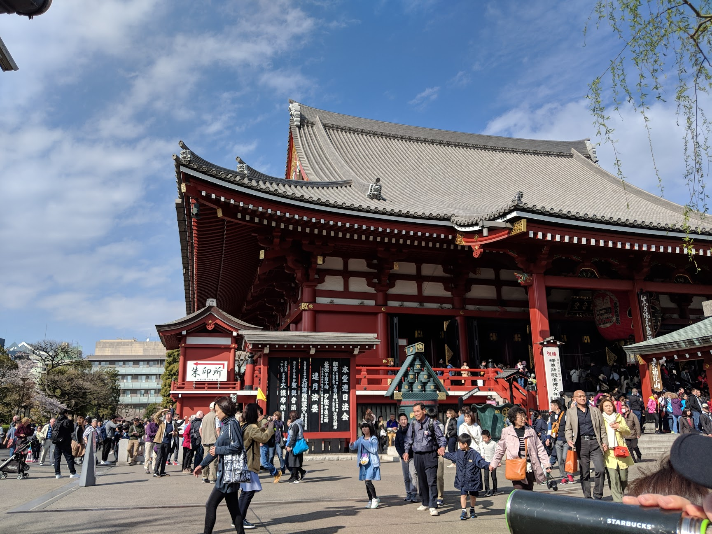
东京
抵达东京
早在很久之前，我们就有去东京旅行的想法。挑在这个时间去旅行，一是有清明假期，可以省下几天年假；二是春天是看樱花的好时节；三是庆祝恋爱四周年，也算是一次迟来的毕业旅行。我们在东京时间晚上九点左右抵达羽田机场，乘坐地铁来到位于银座的酒店。第一次在东京坐地铁还遇到了一些小波折。因为到得太晚，办理西瓜卡或Pasmo卡的地方已经下班，只能单独购票。东京地铁在不同段若由不同的公司管理，则在Google map上会显示为不同名称的线路，导致我们为是否需要换乘而迷惑了一会儿，而事实上如果没有特别说明需要换乘，那么就算线路名称有改变，也是不需要下车换乘的。
最后好歹到达了银座站，在路上遇到一家FamilyMart，抱着试一试的心态买了一罐男梅酒，可惜我们俩对这个酒的味道都有点接受无能。
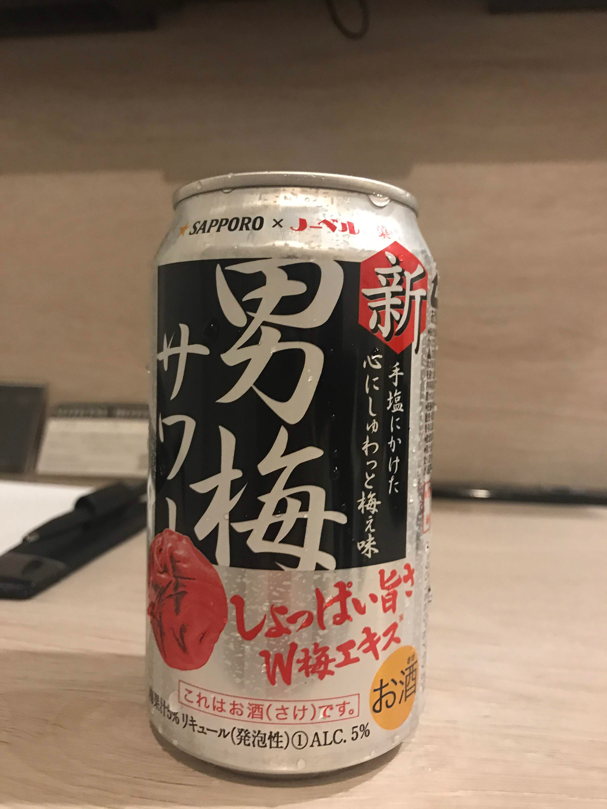
第一日 走断腿
上野公园 & 上野动物园
上野公园里的樱花树都非常高大，于我而言少了些美感。树下的草地上有很多野炊的人，每一拨人都带着一大块野餐布，中间放满食物，大家围坐在一起有说有笑。野餐布一块接一块紧密地排列在一起，好似舍不得浪费任何一寸可利用的土地。就是在这样紧密的排布下，野炊的人竟也几乎把空地占满了。我不禁好奇究竟这些人是在参加公司的团建活动，还是日本确实很流行野炊。
离上野公园不远是上野动物园和国立科学博物馆，我们去这两处转了转。上野动物园里最壮观的场面当属排队看大熊猫的队伍，弯弯绕绕不知排了多少人，和其他动物场馆形成鲜明的对比。
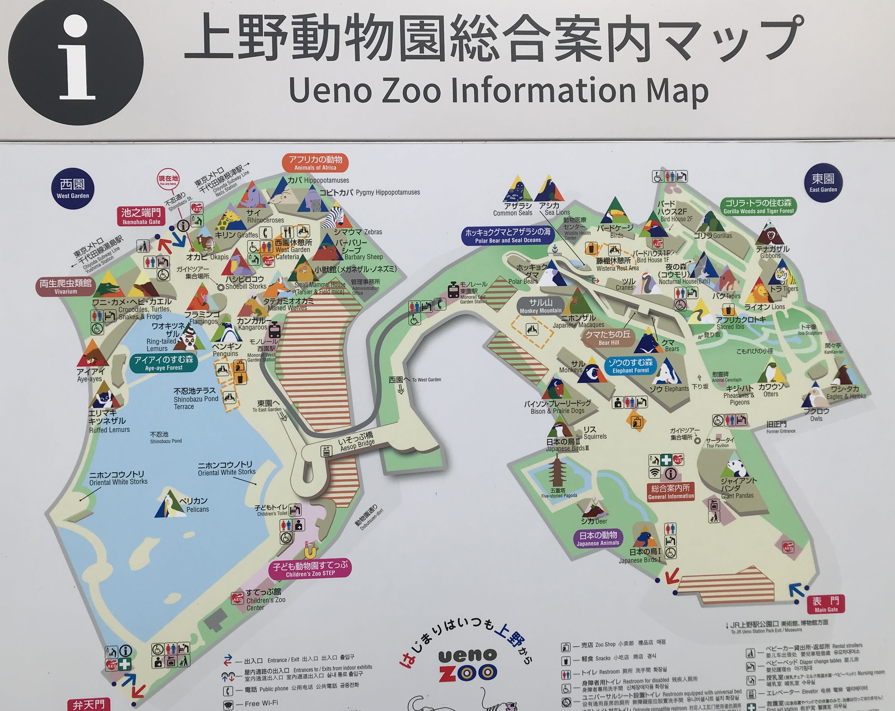
中午，我们在上野公园附近的一家罗森便利店买了些吃的，带到。这家罗森的炸鸡味道非常好，后来在其他便利店再没有遇到这么好吃的炸鸡。
浅草寺
下午去往浅草寺。浅草寺的游人更多，说是摩肩接踵也毫不为过。寺前的街道上有很多小店，我被其间的风铃所吸引，但是游人实在太多，便打消了上去凑热闹的念头。遗憾的是，由于我们上午在上野消耗了太多体力，下午只能走走停停。
后来看我住知道浅草寺有一家画搞笑人像的店，下次有机会再去看看。
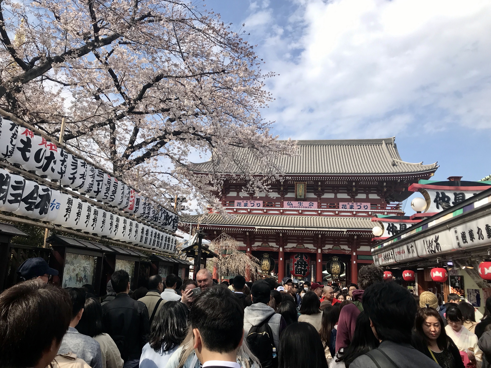
银座夜景
由于白天打卡一样的逛了好几个景点，回到酒店已经要累趴了。稍作休整后决定就在酒店附近的银座看看夜景。
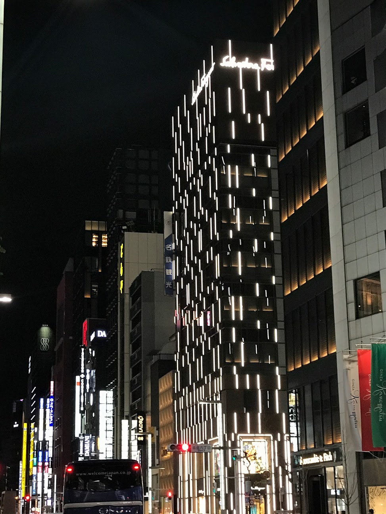
第二日 圣地巡礼
新宿御苑
不管是为了赏樱还是圣地巡礼，不可不去的就是新海诚的言叶之庭取景地的新宿御苑，也是本次旅行极为期待的目的地之一。
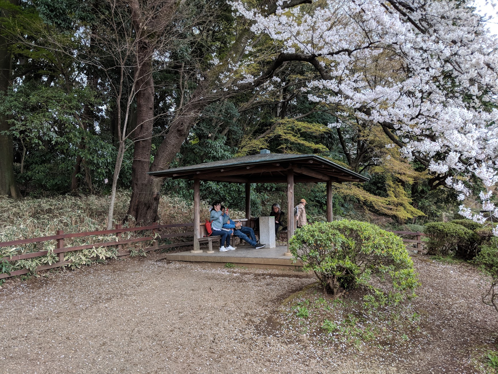
凉亭确实没有动画里的那种给人以宁静的美感，可能游人太多，以及没有下雨的缘故吧。不过新宿御苑确实是赏樱的绝佳去处，倒映在水上的樱花树和漂浮在水面的花瓣给人无限的遐想，似乎已然进入梦境之中。
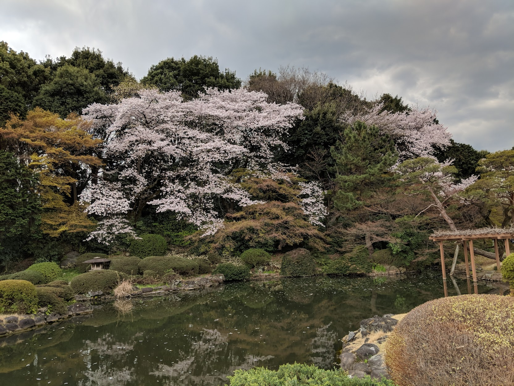
涩谷
离开饱含自然之美的新宿御苑，不得不错过的就是与新宿站毗邻的满是人文气息的涩谷站了，虽然我们下错了口导致找了很久才找到标志性的忠犬八公以及生化危机取景地的涩谷十字路口。
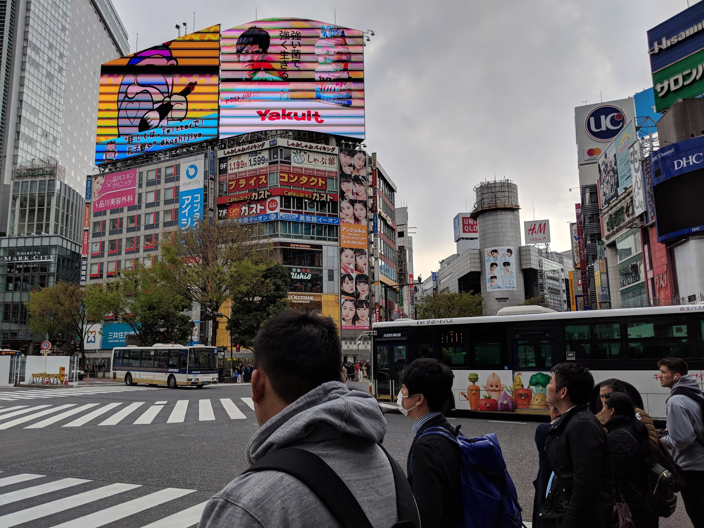
曾经在脑海中无数次幻想自己站在十字路口望着人来人往感叹世人皆苦，十分通透。真正陷入其中时倒只会感叹自己的渺小，就像凉宫春日在硕大的体育馆里感受到世界不是以你为中心，但是日子还是得过下去。
Tokyo Tower
离开繁华的涩谷街头，我们来到了东京夜晚浪漫的约会地 Tokyo Tower，尝试登上这美丽的塔楼去看看夜晚的东京。
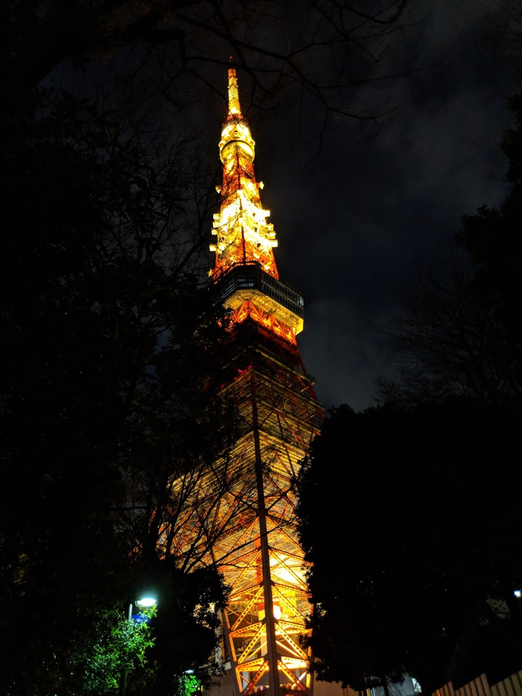
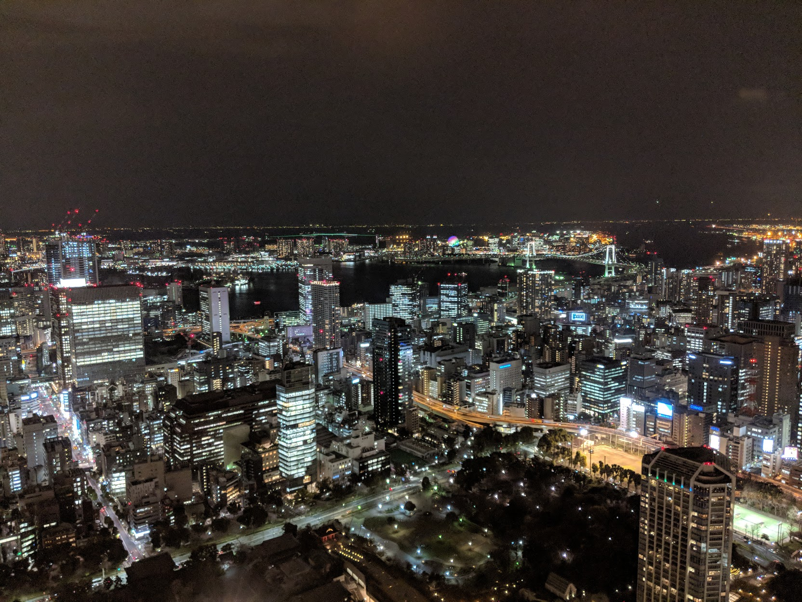
在249.9米处的特别瞭望台处，俯瞰着这座美丽的城市在夜晚才会换上的霓虹灯衣裳，顺便买上几张明信片，以跟远处的好友分享这一喜悦。
第三日 拜访谷歌东京
谷歌东京
很早就听说坐落在六本木之丘的谷歌东京office非常漂亮，于是早早和在东京的两位学长联系，希望带我们参观一下office，虽然理论上我也可以直接进去。
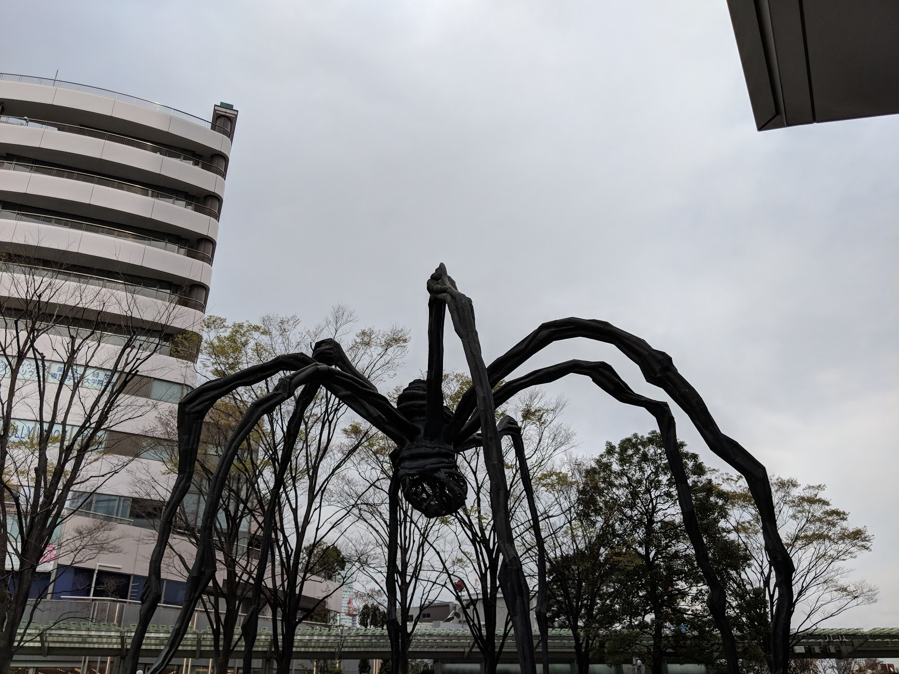
office的伙食极具日本特色，比如烤鳗鱼、荞麦面等，吃起来也很不错，和北京一样各有千秋。吃完饭以后Byvoid学长带我们到属于谷歌的最高层俯瞰位于涩谷的新office。据说天气好的时候甚至可以远瞰到富士山，可惜当天有点多云。
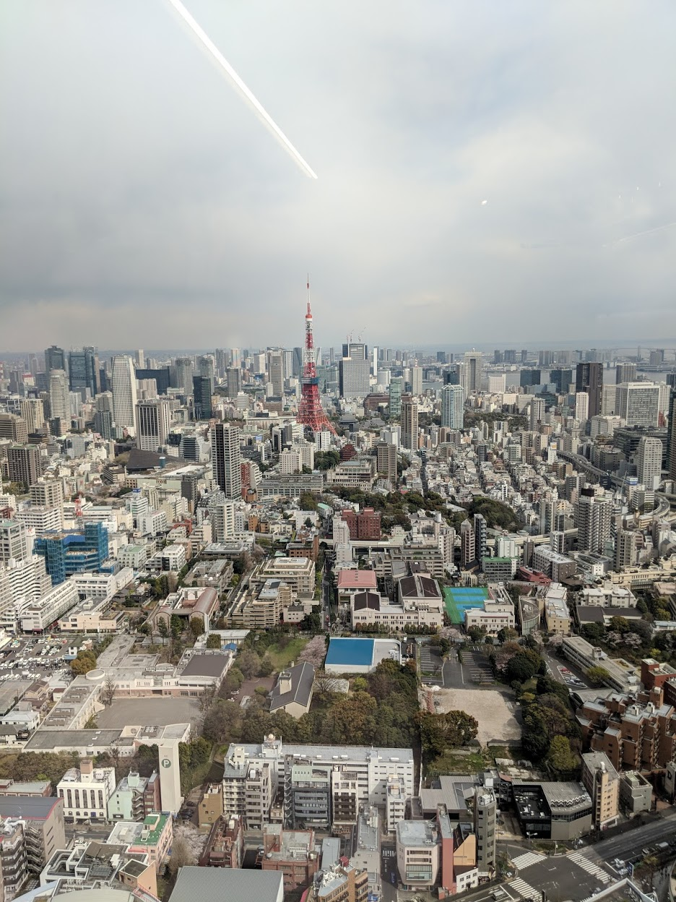
和学长聊了很多，包括是否Transfer，这边office的情况，我也确实有了很多的想法，希望有一天可以在这边工作一段时间。
美丽的横滨
离开谷歌后，我们决定直接坐地铁去横滨看看海景以及中华街。
不得不说横滨真是一个美丽的城市，当那一团团的花丛映入眼帘，衬托着近处的喷泉以及远处的海景，我甚至有被震撼到，不由自主停下来坐在长椅上感受了一下这番美丽。如果以后我在东京工作，也许我会住在横滨吧。
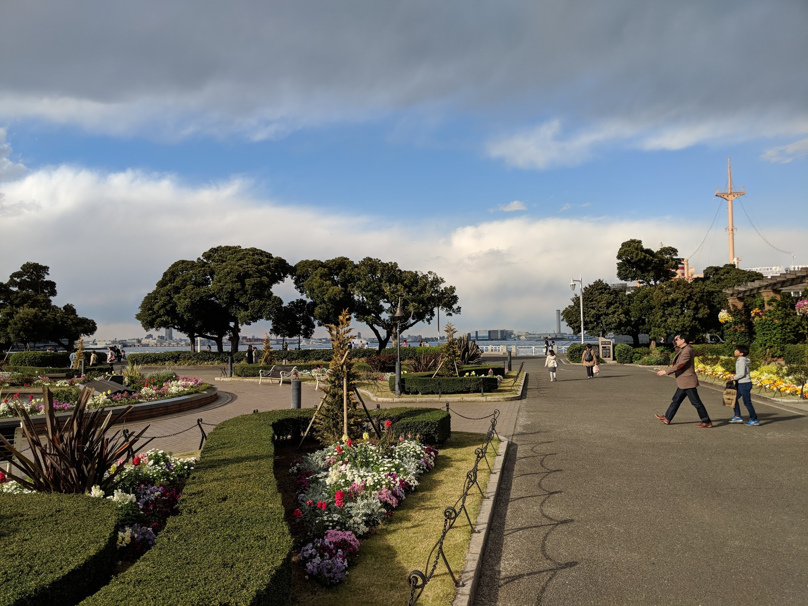
至于中华街反倒没有给我留下特别深的印象，也许看着日本人卖中华特产就和美国人到中国看到加州牛肉面大王一般无奈。
中目黑赏樱
从横滨回来后我们决定顺道去中目黑看看夜樱，结果一出地铁看到的却是黑压压的人群，让我仿佛想起了多年前的那个国庆在南京挤不上火车的那个夜晚。好在中目黑的樱花确实别有一番风采，不过拍了两张照片我们就撤了，因为人群实在太拥挤了。
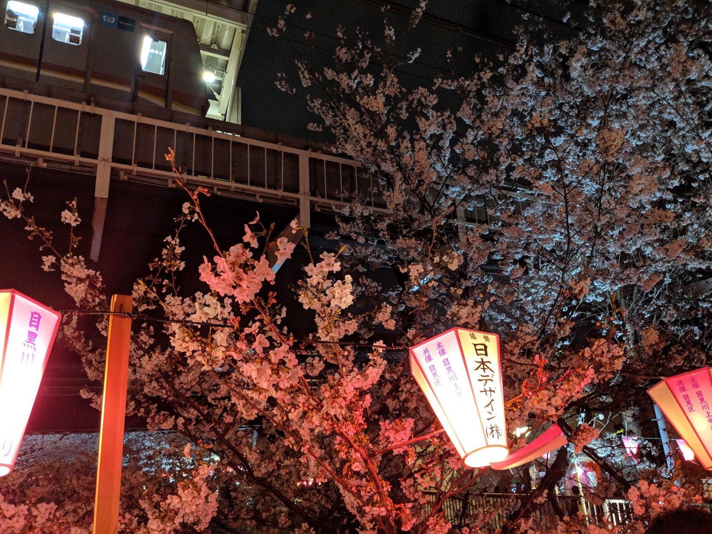
第四日 Ghibli!
三鹰之森吉卜力博物馆
位于三鹰市的吉卜力博物馆绝对是此次日本之行的重中之重。作为铁杆粉丝，久仰博物馆大名，于是很早就做了攻略，提前一个多月订了门票。
博物馆不在东京十三区，需要转几次地铁再坐博物馆的公交才能到。博物馆的外表就很可爱，里面有很多特制的道具展示动画里的角色或者场景，还有很多展览介绍工作室作画的场景，最让人心动的是里面有一个小电影院会放映一些不对外公布的动画短片，可惜的是里面的一切都不让拍照。
我们在博物馆里游玩了很久，还买了一些纪念品，打算送给朋友。
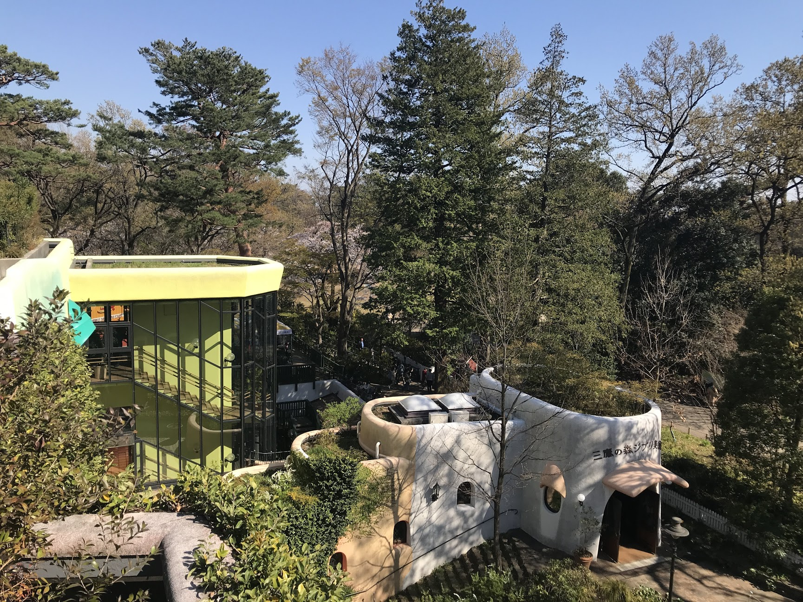
第五日 东京大学
东京大学
作为旅行保留项目之一，我一般会去当地最有名的大学看看，刚好品儿有一个高中同学在东大，自然不能错过了。
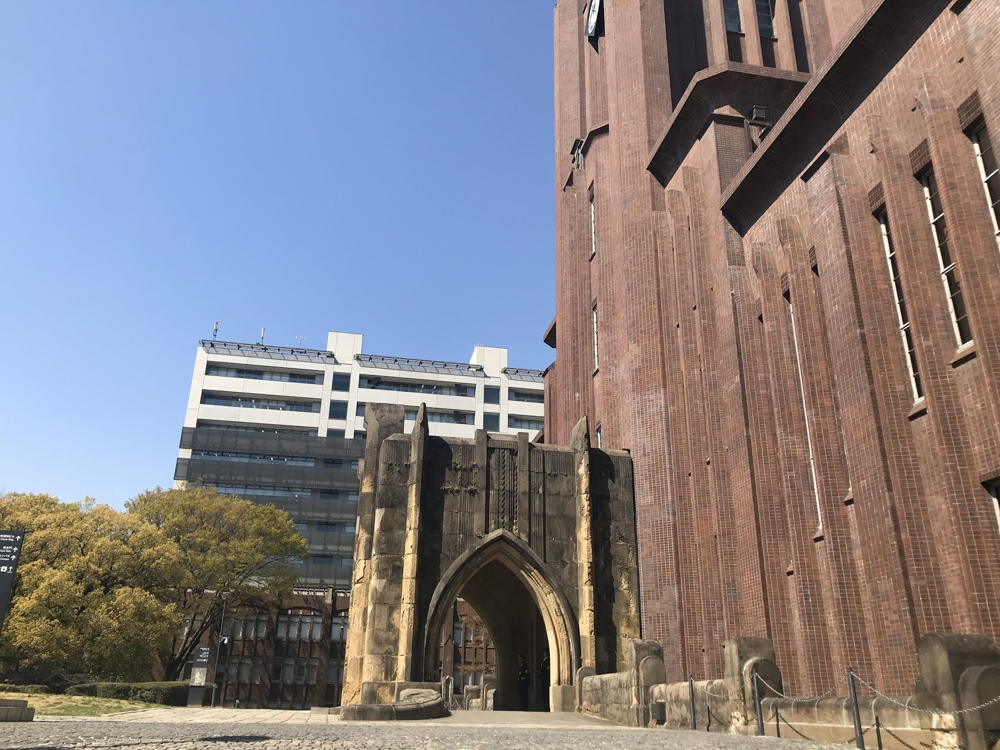
东大作为日剧中经常出线的dream school，如龙樱，在我看来除了建筑漂亮以外，倒没有什么特别的感觉，可能不是日本人，自然没有这种对东大的向往。
想起了垫底辣妹里妈妈在大学食堂里对沙耶加说希望她也能像其他人一样也能自信满满地生活，可是我没有看到大家眼里地自信满满，只看到人生地匆忙与无奈。
在食堂吃完午饭后我们就离开了。
小石川后乐园
偶然发现的公园，据介绍名字取自范仲淹的“后天下之乐而乐”，曾经是私人住宅，有一定的历史了。
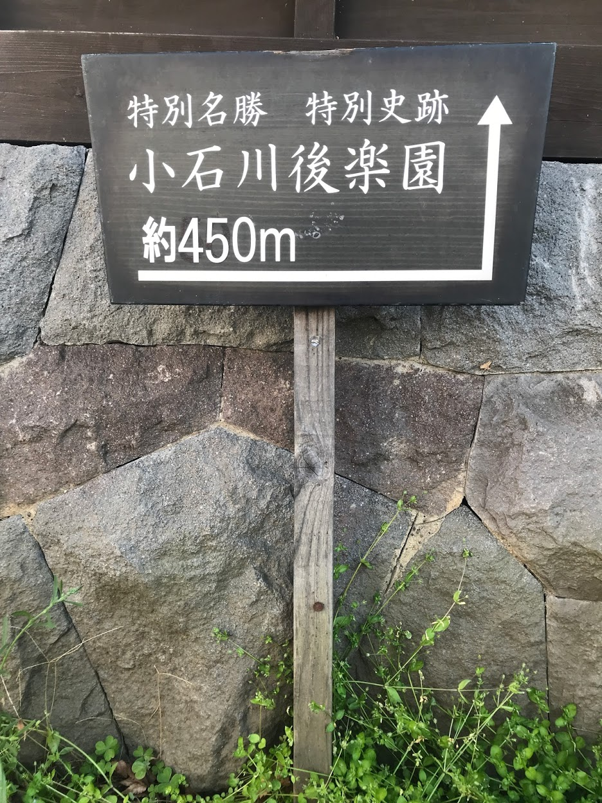
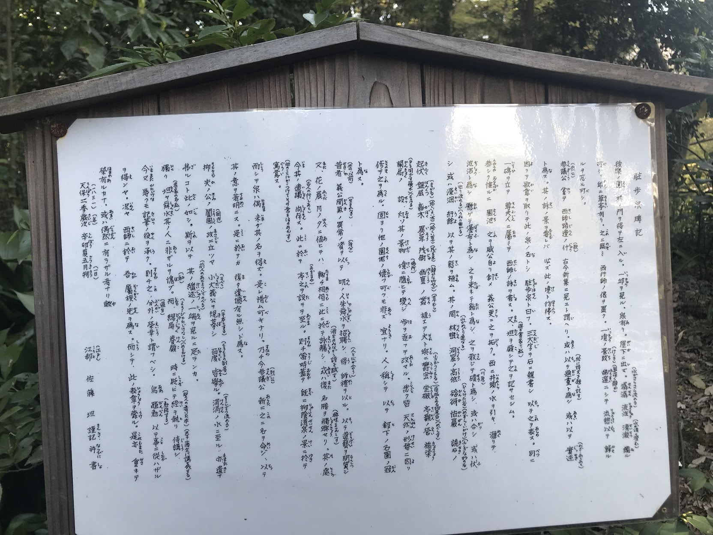
我们游玩了一段时间，发现这个园子很有中国古典园林的特色，虽然不太出名，但也是一个赏樱的好去处。
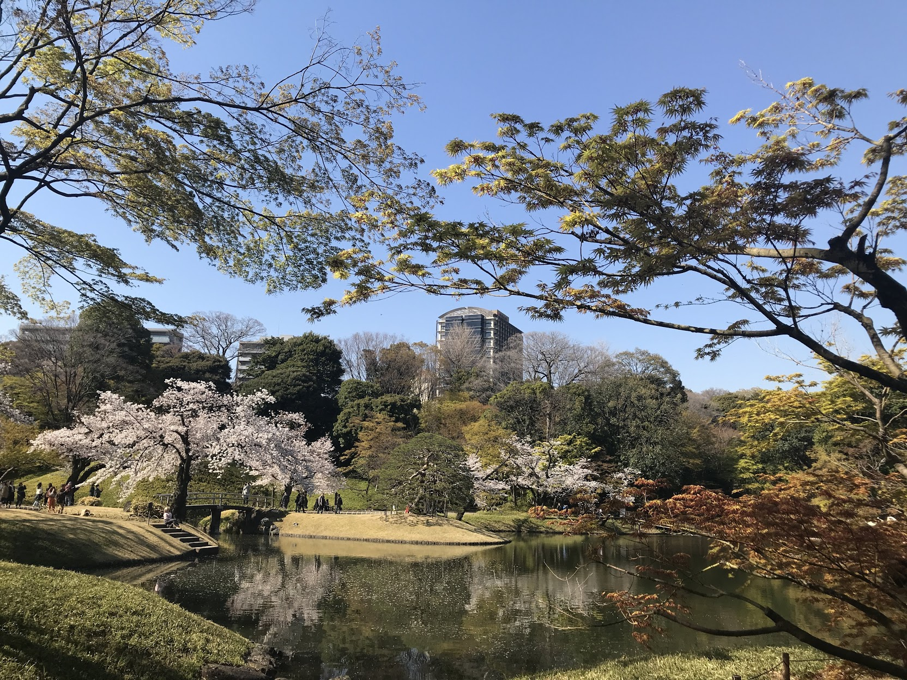
千鸟之渊
最后一个我们打算去的赏樱之地，总的来说还不错，至少比上野公园强。此外，千鸟渊和皇居很近，可惜的是刚好碰到日本改年号，皇居不开放。
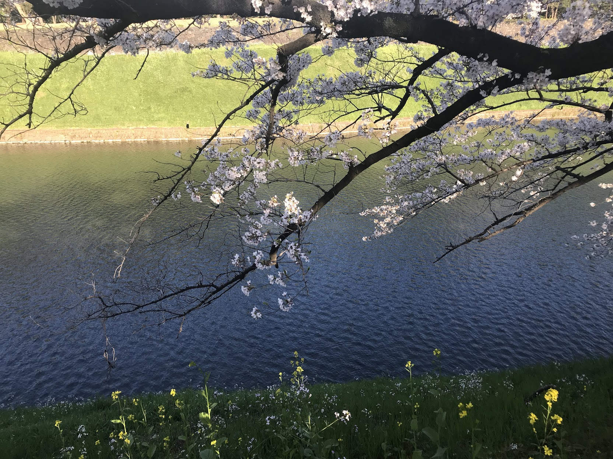
第六日 箱根の旅
在日本的最后一天，我们打算去箱根看芦之湖与富士山。
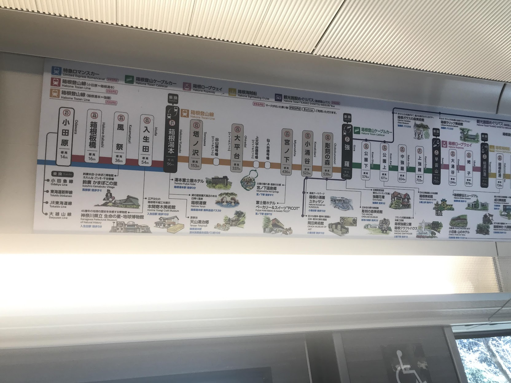
我们需要从新宿出发，坐小田原浪漫特快，中间还换了登山电车和登山缆车，最后坐空中缆车到箱根，可惜的是因为风大，空中缆车不能开放，我们只能在大风中等待下山的巴士。
天知道我们等了多久，反正谷歌地图上的公交车时刻表在这乡下不再好用。最后的最后，我们还是到达了在箱根要住的民宿，开始了最后一天的探索。